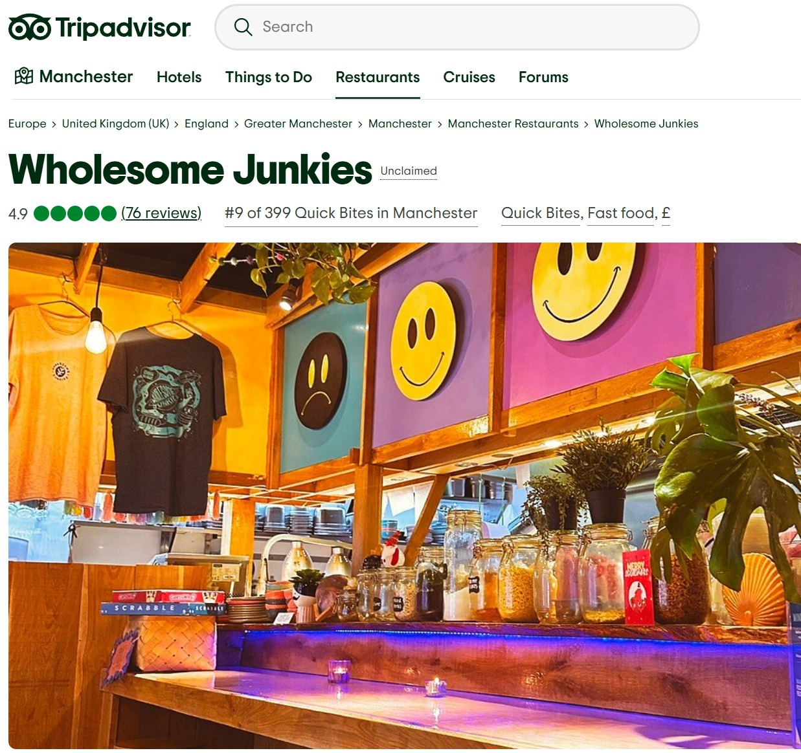

Zouk Tea Bar & Grill

Is a modern Indian and Pakistani restaurant known for its bold flavours and vibrant atmosphere in Manchester. Zouk’s blend classic south again recipes with contemporary twists and offering everything from traditional curries and street-food-inspired dishes to fuse creations together like the butter chicken bao and pulled lamb nihari.
My Peshawar

my Peshawar is a fantastic restraint that offers a true taste of traditional Pakistani cuisine, especially dishes inspired by the rich flavours of the Khyber Pakhtunkhwa region. The food is well seasoned, freshly prepared daily and known for its grilled meats and chapli kebabs and their hearty curries. The atmosphere Is warm and cosy, making it a great place for going to eat with friends or family.
My Lahore

My Lahore is a vibrant and welcoming restraint known for its delicious Pakistani and Indian-inspired dishes. The menu offers a great variety, from flavourful curries and grilled meats to biryanis and there in house made fresh naans, with something for everyone. The atmosphere is always lively and family friendly which makes it a perfect spot for both casual meals and special gathering.
Purezza Manchester

Purezza Manchester is a vegan restaurant that offers delicious and innovative Italian cuisine. You can find a wide range of Vegan Pizzas, Pastas, Burgers and more all made from locally sourced ingredients.
Wholesome Junkies

Wholesome Junkies is another fully vegan restaurant that offers Compact, cheerful kiosk in a food court, dishing up vegan mac & cheese, burgers & other light bites for all to enjoy.
Circolo Popolare Manchester

Circolo Popolare is a bold and eye-catching Italian restaurant which serves an authentic dining experience. It is known for décor, quality homemade dishes, and a lively atmosphere that makes it stand out in Manchester’s food scene.
Rudy’s Pizza Napoletana – Peter Street

Rudy’s Pizza Napoletana is known for serving authentic, Naples-style pizza made with simple, high-quality ingredients and cooked in a traditional wood-fired oven. The restaurant has a relaxed, welcoming atmosphere and is popular for its light, soft, and perfectly charred dough. Whether dining in or collecting, Rudy’s offers a decent selection of classic and seasonal pizzas, alongside fresh salads, desserts, and drinks.